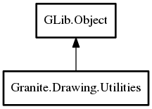

Granite.Drawing.Utilities – granite Reference Manual
Packages
granite
Granite
Drawing
Utilities
average_color
cairo_rounded_rectangle
Utilities
Utilities
Object Hierarchy:

Description:
public
class
Utilities
:
Object
Namespace:
Granite.Drawing
Package:
granite
Content:
Static methods:
public
static
Color
average_color
(
Pixbuf
source)
public
static
void
cairo_rounded_rectangle
(
Context
cr,
double
x,
double
y,
double
width,
double
height,
double
radius)
Creation methods:
public
Utilities
()
Inherited Members:
All known members inherited from class GLib.Object
@new
newv
new_valist
get_type
get_class
@ref
unref
ref_sink
weak_ref
weak_unref
add_weak_pointer
remove_weak_pointer
@get
@set
get_property
set_property
get_data
set_data
set_data_full
steal_data
get_qdata
set_qdata
set_qdata_full
steal_qdata
freeze_notify
thaw_notify
dispose
constructed
notify_property
connect
disconnect
add_toggle_ref
remove_toggle_ref
bind_property
notify
ref_count